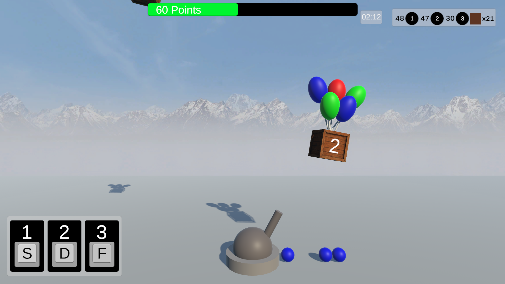
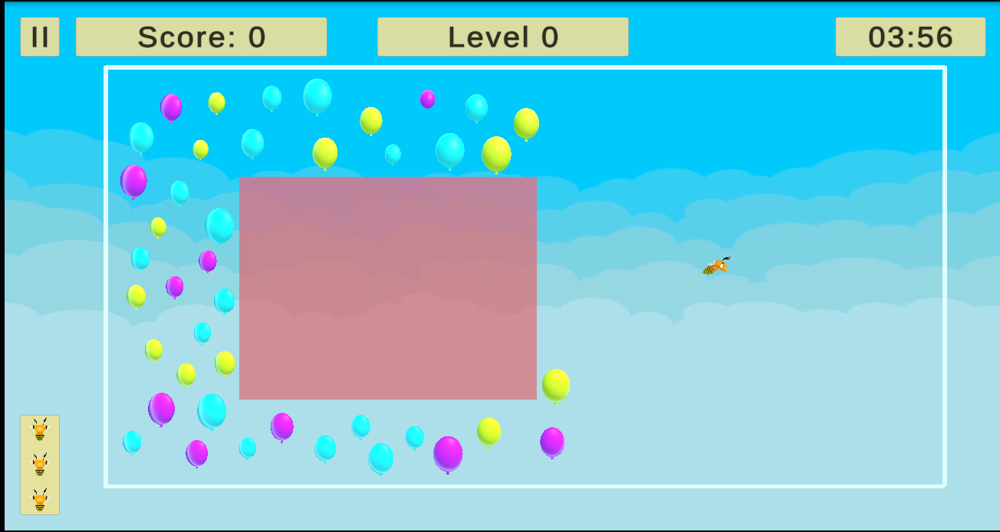

Selected Work
My Projects
Four projects spanning full-stack development, game development, UX design, and compiler theory.
Aces High Casino
Full-Stack Online Casino & Poker Web App
An ongoing full-stack online casino/poker web application with user authentication and profile features. I'm designing the backend systems for game-state management and database integration, and collaborating with a small team using a standard Git/GitHub workflow through branches, pull requests, and code review.
Minus Malus
UI/UX Design & Interactive Gameplay — Midterm Project
A brain-training game that sharpens processing speed, working memory, and cognitive flexibility, inspired by Cognifit's Minus Malus. The player controls a cannon and uses number keys to fire values that reduce falling crates down to exactly zero, overshoot, or let one hit the ground, and points are lost. Three levels ramp up spawn rate, crate count, and fall speed.

Bee Balloon
Physics Simulation & Data Collection — Final Project
A cognitive-training game built to strengthen reaction time, spatial awareness, and problem-solving, inspired by Cognifit's Bee Balloon. The player guides a bee through predefined paths to pop balloons while dodging red zones and bombs, across four progressively harder levels using interpolation, easing, and Bezier-curve movement. It also logs player performance data, such as duration, score, and outcomes , with a full pause system and real-time stat UI.

Python Parser
Lexical & Syntax Analysis, Built With ANTLR
A group project implementing a lexical and syntax analyzer for Python 3.x. Centered on constructing a Context-Free Grammar to parse arithmetic operations, assignments, conditionals, and loops, generating a parse tree for visualization while preserving Python's indentation sensitivity. Delivered in three stages: operators, conditionals, and nested loop structures, each verified against predefined test code.